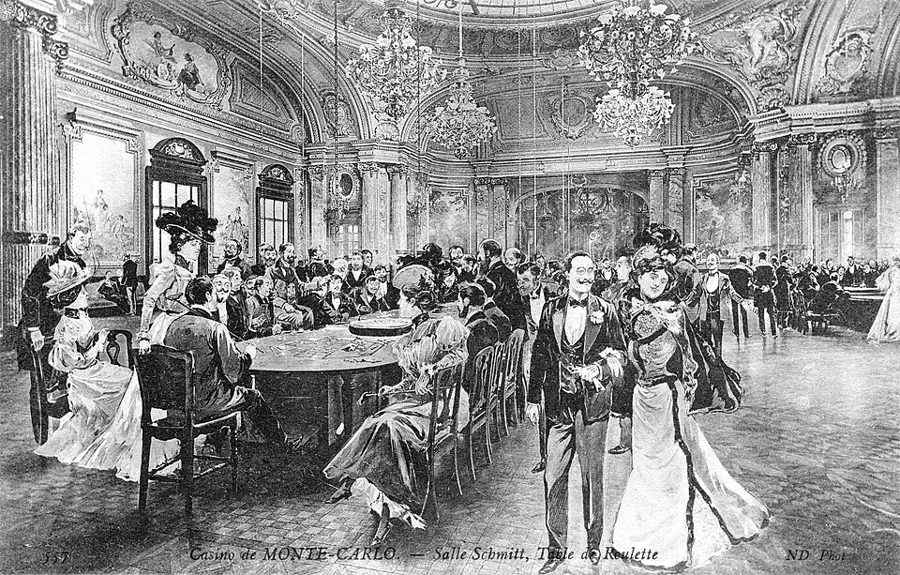
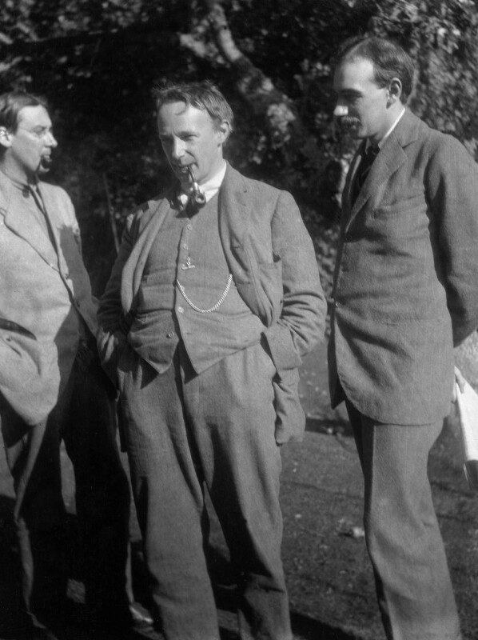
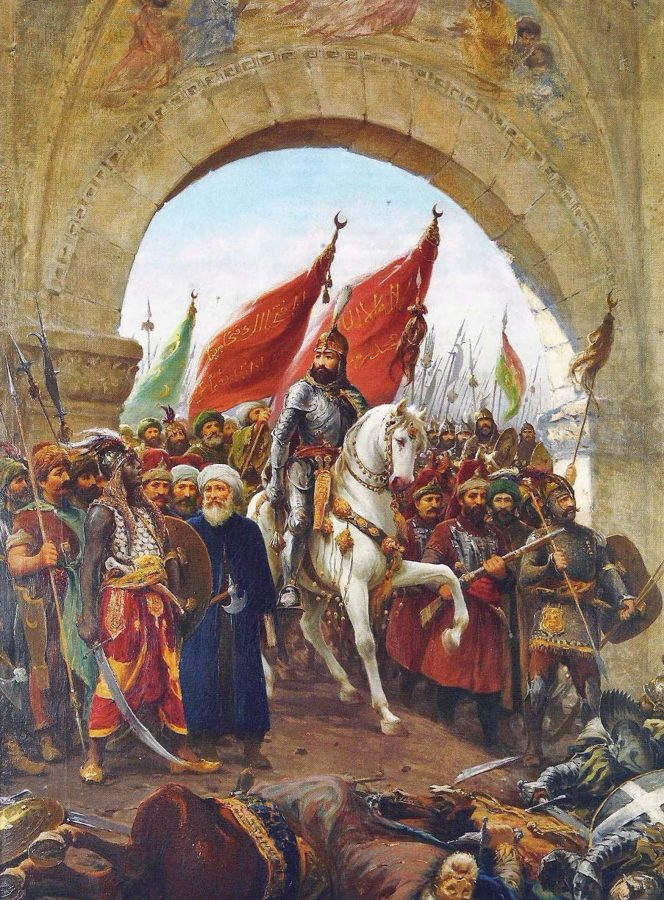

a modicum of greed
… with a modicum of greed …
（再加上）一点点贪心
modicum 是少量。作者自嘲：没有真问题、没有一点钱可赚，他就解不进一个方程。
这一章把第 2 章的「另类历史」做成一件工具。作者先画两幅漫画，邋遢的纯数学家和赌场里的花花公子，说他要的数学是两者合一；接着讲样本路径、阁楼里用电脑造的轮盘、乱枪打出的圆周率，讲他的模拟里谁活了下来。后半转到人怎样对待历史：烫手的火炉、藏着针的握手、一位要交易员「把赚钱的单子加倍」的新上司，最后回到他祖父在雅典的公寓。读的时候抓一条线：看到一个结果，就去想没发生的那些。

第 2 章用俄罗斯轮盘讲了「另类历史」：同样一千万美元，靠轮盘赢来的和靠当牙医挣来的，依赖运气的程度不同。作者在那里说，下一章要用蒙特卡洛把这个想法变成数学。这一章的前五节就是兑现：工具、他的模拟、他的自述。§6 到 §8 换了话题，讲人怎样对待历史；§9 回到第 1 章梭伦的故事，并在最后一段抛出一个新词：遍历性。这一章从 §10 起的后半在下一页，讲噪声和信息。
§5 作者说他的模拟里多头、空头几乎全军覆没，只有一部分做期权的人活得长。模型和参数书里都没给，而他说他想成为的正是这种人。把它当作者对自己打法的说明，不当研究结论，页末再说。
看到一个人赢了，为什么还要去想他本来可能怎样输？
读的时候带着这几个问题。不用先找答案，读完回来对照「检查一下理解」。
§1 是两幅漫画，读着好玩，引出「数学用来沉思」这层意思。§2 是这一章最像教科书的一节：几个概念排着队出来，最后落到阁楼里的电脑轮盘。§3 从圆周率跳到作者自嘲「数学带口音」，又拉上爱因斯坦和凯恩斯，有点像在报家门。§4、§5 是他的自述：九成五的时间可以自由思考，模拟出来的怪物和交易员；§5 里藏着这一章最值得记的一句话。§6 突然转向，话题从工具换成历史，从这里起是另一条线。§7 讲人只从自己的伤里学，故事最多：火炉、失忆的病人、一张爆仓名单。§8 是全章最好看的办公室故事。§9 先是一段家族往事，读着像离题，最后一段却抛出遍历性，把工具和历史两条线接在一起，也引向下一页。
这一页是原书和译本第 3 章的前 9 节，后 4 节在下一页。粗体是本站给的节名，后面是档和译本字数；下面是译本的小标题和这一节在译本电子书里开头的几个字（搜它就能跳过去），再下面是英文原文的开头。「先读」是这一章的骨架，「有空」好看、跳过不丢线，「可跳过」读不读都行。读完打个勾。
先把这一页用到、作者默认你懂的几个概念讲一遍。讲的是概念本身，作者拿它推出什么，读原书时自己看。别页讲过的概念，点链接过去看。
一个结果只是终点：一年后账户里有多少钱。一条路径是整个过程：这一年每一天的余额，中途跌到过多深、涨到过多高。两个人年底都是 145 美元，一个一路慢慢涨上来，一个中途跌到过 10 美元，过的是两种日子。
统计学把随时间展开的随机现象叫随机过程（stochastic 是希腊词根，意思就是随机），它的一次具体走法叫一条样本路径。「样本」两个字提醒你：你看到的只是许多条可能的路径里实现的那一条。随机也不等于每种结果机会均等：掷两个骰子，点数和是 7 的机会比 2 大得多。程序员熟悉的例子是压测：同一套配置重跑一遍，延迟曲线不会一样，平均值相同的两次，中间的尖峰可以差很多。
在这一页：§2 给样本路径和随机过程下定义；§5 作者说看到实现的结果就会想到没实现的那些；§9 的遍历性说的也是很多条路径。
有些问题公式很难解，却很容易「照着规则演一遍」。蒙特卡洛模拟就是让电脑按设定好的概率把一件事重演成千上万次，再看结果的整体样子：多少次赢、多少次输、最坏能坏到哪里。它在二战后的洛斯阿拉莫斯实验室发展起来，名字取自摩纳哥的蒙特卡洛赌场。
§3 的圆周率是经典例子：往一个正方形里均匀地乱打点，落进内切圆的比例约等于 π/4，乘以 4 就是 π 的估计。代价是精度来得很慢：误差大约和打点数的平方根成反比，想多准一位小数，要多打约 100 倍的点。还有一条要记住：模拟只会照你设的规则演，规则设错了，演一百万遍也是错的。
在这一页：§2 讲它是什么，§3 拿圆周率说它的好处，§4、§5 是作者自己用它做的事。下面的模拟器就是一台小小的蒙特卡洛。
知道了结果，人会觉得自己早就料到，并且高估当时能看出多少。心理学家 Baruch Fischhoff 1975 年的实验是这方面的经典：先告诉被试某段历史的结局，他们估计的「事前看来的可能性」就明显偏向那个结局，而且以为自己没受影响。
它的近亲是「以结果论决定」：一次上线出了事故，大家回头看代码评审，个个觉得「当时就该看出来」；同一份代码要是平安无事，没人会说评审做得差。决策研究把后一种叫结果偏差（outcome bias）。
作者在 §8 还用了 historical determinism 这个词（译本：「歷史決定論」），说专家把「以为历史发生的时候自己会知道」叫这个名字。哲学和史学里通常说的历史决定论，是指历史有规律、照规律展开，两者不是一回事。
在这一页：§8 新上司的故事之后，作者点出这个名字，并说第 11 章还会再谈。
先猜：一千个人各拿一把六个弹巢、一颗子弹的左轮，对着自己玩一次，赢的拿一千万美元。大约多少人活着拿到钱？如果这一千个人从 25 岁起每年玩一次，玩到 50 岁，还剩几个？再点下面的模拟器验证。
第 2 章那个俄罗斯轮盘的玩具版。上面的方块是一千个「平行的你」，绿色还活着，红色已经死了；下面每个点是一个人最后手上的钱。先点「6 孔，玩 1 次」。
需要浏览器打开脚本才能运行。
各个控件：「策略」里，俄罗斯轮盘每玩一次，送命的机会是 1 除以弹巢数，活下来就拿一千万美元，死了就什么都没有，也不再玩；牙医每一轮也挣一千万上下（每轮随机浮动，多数在上下一成以内，偶尔差到两三成），靠的是干活，不会送命。牙医的数是本站设的，书里没给：每一轮挣得和轮盘赢家一样多，只为让活下来的人和牙医账面上一样多，这就是第 2 章 §2 说的「同样一千万」。这样设，牙医的平均比轮盘所有人的平均（死了算 0）高，所以别拿两边的平均比谁划算：第 2 章比的是同样的一千万依赖运气的程度。「弹巢数」是左轮里有几个弹巢，子弹始终只有一颗。「玩几次」是每个人连着玩多少轮，每轮独立。「看法」可以看一千个平行的你，也可以只看一个你一路玩下去。统计栏里标「精确」的是按公式算的；标「随机」的（这一回还活着几个人、方块和点的红绿、「你」那一条线）是用固定的起点抽出来的，所以每次打开页面看到的都是同一批；点「换一批运气」再抽一次，点「重置」回到第一次的抽法。
这个模拟器只演一件事：同一个「生成器」（第 2 章的说法：产生结果的那套机制）能产生多少种历史。每轮独立、概率已知，现实没这么干净：第 2 章 §4 说，现实的弹巢是看不见的。第四步那对切换是作者后来的说法。他 2018 年的《非对称风险》（Skin in the Game）把它叫作「群体概率」（一百个人各去一次赌场）和「时间概率」（一个人去一百次）的区别，详见遍历性；这一章 §9 讲的遍历性，是同一个词的另一面，读完 §9 再回来对照。
按在书里出现的顺序排，标题前是节号。只讲到读懂这一页需要的程度。
§1 那位蓄大胡子、独居小屋的数学家是 Theodore Kaczynski，美国媒体叫他「大学炸弹客」（Unabomber）。他 1967 年在密歇根大学拿到数学博士，在伯克利短暂任教后辞职隐居，此后近二十年间寄出、放置邮包炸弹，炸死三人，1996 年被捕。书里说他的论文叫 Complex Boundaries，实际题目是 Boundary Functions（边界函数）。complex number 是数学里的「复数」，含负一的平方根，作者在拿这个词的两层意思打趣。
书里说蒙特卡洛方法是在洛斯阿拉莫斯研制原子弹时首创的。更准确地说是二战之后：1946 年，数学家 Stanisław Ulam 养病时玩单人纸牌，想算赢的机会，想到干脆多发几副牌数一数；他和 John von Neumann 把这个办法用到核武器里中子扩散的计算上。同事 Nicholas Metropolis 借 Ulam 的叔叔常去赌钱的蒙特卡洛赌场给它取了代号。此后它在氢弹设计里用得很多。作者说 1980 年代它在金融数学里流行起来，用来模拟资产价格的随机游走。

作者说爱因斯坦 1905 年那篇布朗运动的论文，「几乎」是最早用概率描述一连串随机事件的。这个「几乎」留得对：法国数学家 Louis Bachelier 1900 年的博士论文《投机理论》已经用随机游走描述巴黎交易所的价格，比爱因斯坦早五年，今天常被当作金融随机游走模型的源头。作者说凯恩斯炒自己的账户爆过仓：他确实几次大亏，1929 年股灾后资产几乎被抹掉，但很快赚了回来，去世时是个富人，还替剑桥国王学院管了多年的基金。
Richard Feynman（1918–1988）是美国物理学家。他给量子力学换了一种算法：一个粒子从 A 到 B，要把它所有可能走的路径都加起来，英文常叫 sum over histories。作者把它改成 summing under histories（译本：「歷史之總和」），只借了这个画面，和物理无关。Alain Robbe-Grillet（1922–2008）是法国「新小说」的代表作家，常把同一个场景反复改写。佐葛鲁伯（Zorglub）是作者模拟里虚构的一种快速变异的动物，名字很可能借自比利时漫画《斯皮鲁》里的一个反派科学家，作者没说。
书里说这是十九世纪的实验，通常引的是 Claparède 1911 年的报告。病人失去了形成新记忆的能力，旧事和推理却还在。今天的记忆研究把「说得出来的记忆」和「身体记住、说不出来的记忆」分开，前者叫陈述性记忆，后者叫非陈述性记忆，这个病例常被当作后者的早期例子。Daniel Kahneman 和 Amos Tversky 是以「前景理论」和一系列判断偏误实验出名的两位心理学家，Kahneman 2002 年获诺贝尔经济学奖，Tversky 1996 年已去世。作者说他们研究过人怎样选择有风险的疗法，没说是哪一项研究。
作者列了几次让一批交易员爆仓的行情：1987 年 10 月美股一天跌两成多；1990 年日本股市从 1989 年底的顶点崩下来，日经指数一年里跌去近四成；1994 年美联储连续加息，债券价格大跌；1998 年 8 月俄罗斯政府债务违约；还有做空纳斯达克科技股的人，在 2000 年前后泡沫最后的猛涨里被逼出局。做空就是押下跌，见做空。
Jean-Patrice 是第 2 章作者的一位上司，那位只看「生成器」、不看一时结果的人，这一节讲他被换掉以后的事。外汇交易员替银行买卖各国货币，一天可能做很多笔；后台（back office）是负责清算、对账、记账的部门，交易笔数越多，它的开销越大。新上司分析的就是这些交易的盈亏记录。

1453 年 5 月 29 日，奥斯曼苏丹穆罕默德二世攻下君士坦丁堡，东罗马（拜占庭）帝国就此灭亡。作者出身黎巴嫩的希腊正教家庭，说自己这类人是一个已经消失的帝国的遗民，在伊斯兰世界里富有，财富却很脆弱。他的外祖父和外曾祖父都当过黎巴嫩副总理（书里只说祖父是前副总理、副总理之子，没写国名）。黎巴嫩内战从 1975 年打到 1990 年，作者在战争中度过了少年时代。
读英文原文时值得停一下的词和句：交易员的行话、作者的反话和双关、熟词生义。灰色斜体是原句里连续的几个词，在英文电子书里搜它就能找到；标「每个字都认识」的，是每个词都眼熟、合起来意思却变了的，最容易读错。点「记下」收进词本。
对着译本读这一章时，下面这些地方会把人读歪。方框里是译本的原句，在译本电子书里搜它就能找到；灰色斜体是英文原文那一处。只收意思错了、反了、漏了的，措辞上的出入和台湾用语不收。全书的勘误汇总在译本勘误。
… a complex number being an entirely abstract …
译本：「那是一個複雜的數字」
complex number 是数学名词「复数」（台湾也叫複數），就是含负一平方根的那种数。读成「一个复杂的数字」，就看不出作者在拿论文题目里的 Complex 打趣，后半句为什么讲负一的平方根也接不上。
… change the barrel to contain 500 holes …
译本：「把彈匣改成能裝五百發子彈」
原文是把转轮改成有 500 个弹巢，子弹仍然只有一颗，所以送命的机会从六分之一降到五百分之一。读成「装五百发子弹」，就成了必死无疑，和同一句的「降低死亡機率」自相矛盾。本页模拟器的「弹巢数」就是这个意思。
… speaks it with a trace of …
译本：「但有些人講起數學來帶有一點外國腔」
原文的主语一直是 I：作者说自己不是以数学为母语的人，是带着一点外国口音讲数学的人。译本换成了「有些人」，这一段的自嘲就变成在说别人，和后面他讲自己怎样学数学接不上。
… cleaning the argument from the chance coincidence …
译本：「以及不掃除若干論調」
原文是说：评估知识的品质，要考虑取得知识时有随机的成分，并把可能偶然混进论证的巧合清除出去。译本成了「不扫除若干论调，以便偶然掺进一些东西」，方向弄反了，这句是全书方法论的要点之一。
… rarely made it in the boom …
译本：「很少能在市場大漲時放空」
原文是：空头很少能熬过涨势、活到崩盘到来，他们押的方向也许最后是对的，人却先出局了。译本说成他们很少能在大涨时放空、崩盘时回补获利，把「活不活得下来」读成了「时机抓得准不准」。
… but through selection of those who …
译本：「而是透過選擇具備某些有利特質的人去移轉」
原文说：人类的天赋不利于靠文化传递经验，经验靠的是筛选，带着有利特质的人活下来。这是进化论的意思。译本读来像是有人刻意挑选某些人来传递经验。
… had an amnesic patient completely crippled …
译本：「十分嚴重的癡呆病患」
amnesic 是失忆症。这位病人记不住新的人和事，别的能力还在，所以才能显出「没意识到的学习」。痴呆是全面的认知衰退，读成痴呆，这个病例证明什么就模糊了。
… different from merely incurring a monetary loss …
译本：「這種陣亡和其他陣亡不同的地方」
原文拿爆仓和单纯的亏钱对比：爆仓是亏了一笔自己认为根本不可能亏的钱。译本的后半句译出了这层，前半句却成了「这种爆仓和别的爆仓不同」，读来像有的爆仓只是亏钱。爆仓本身就不同于亏钱。
… appears to have been predictable then
译本：「當時似乎也能預測」
appears 是现在（事后）看起来，then 是当时：事后回头看，连双子塔倒塌都像是当时就能料到的。译本读来像当时的人就觉得能预测，正好丢了后见之明这层意思。
… I hark back to the very …
译本：「我回想起這個故事發生在東地中海」
hark back to 在这里是「我的来历可以追溯到」：作者出身的地方，正是梭伦和克罗伊斯的故事发生的那片东地中海土地，这就是他迷这个故事的「另一个理由」。读成「我回想起」，理由就不见了。
… properties of an average of shorter ones
译本：「類似於一般較短路徑的蒙地卡羅特質」
原文说一条极长路径的性质，会接近许多较短路径取平均后的性质。「平均」是遍历性的要害：一个人走很久，等于很多人各走一段再平均。译本的「一般」读着像「普通的」，这层意思丢了。
读完这一章再看。下面是作者在这一章前半的主张，由本站按主张之间的逻辑重新组织，不按原书的顺序；每条后面是节号，拿不准就回书里那一节再读一遍。
他说蒙特卡洛与其说是计算方法，不如说是一种思考方式，数学主要用来沉思。玩了多年模拟，他已经没法只看一个实现了的结果，而不想到没实现的那些，借费曼的说法叫「对历史求和」。他说书里的大多数例子都出自他的蒙特卡洛生成器。
§1 §5他说自己的模拟里，多头赚了钱就加码，直到被宰；空头熬不过涨势；最后几乎没人活下来。例外是一部分做期权的人（他叫期权买方）：他们买了防爆仓的保险，职业生涯不会毁于一天，他想成为这种人。§4 他还说，模拟出的结果越分散，越经不起随机。依据是他自己的模拟，书里没给模型。
§4 §5孩子要被烫过才不碰火炉；失忆的病人认不出医生，手却记得那根针。他说从经验里学到的避险，多半是这种不自觉的记忆，所以读历史书帮不了多少。他认识的看不起历史的同行，全都爆了仓，都说过「这次不一样」。他强调，爆仓不只是亏钱，而是亏了一笔自以为不可能亏的钱。
§7新上司看了外汇交易的记录，要大家多做赚钱的单子。作者说事后看什么都显而易见，心理学叫后见之明偏差；把事后亏钱的交易叫错误，是用结果判决定。更糟的是，擅长「预测过去」的人会以为自己也能预测未来。
§8他要的历史是前人的掌故，不是黑格尔式的历史规律；他向前人学，也用模拟向「未来」学。历史做不了实验，但在中长期里会把大多数可能的情景演一遍。他借用遍历性：大致说，在某些条件下，很长的路径最终彼此相像，幸运的傻瓜长期会回到他本来的水平。
§6 §9合起来：别被一个结果骗了：看人看事，要想到他本来可能经历的那些历史；评价一个决定，回到当时的信息。时间够长，靠运气赢的人会被追上。
I can no longer visualize a realized outcome without reference to the nonrealized ones.— §5。本站译：我再也没法只看一个已经实现的结果，而不去想那些没有实现的。
口气是自述，带一点得意：玩模拟玩出了改不掉的习惯。关键词是 nonrealized，没实现的那些历史，也就是第 2 章说的另类历史。译本这句以译本：「如果不看未實現的結果」开头，意思到了。容易被误读成「别看结果」：他不是不看结果，是看结果时把没发生的一起算上。
A mistake is not something to be determined after the fact, but in the light of the information until that point.— §8。本站译：一个决定是不是错误，不该事后判定，而要看到那一刻为止手上有哪些信息。
下判断的口气，前面还先说了一句要重复到嗓子哑为止，可见是他最想让人记住的话之一。关键是 in the light of：借着当时那点光来看，不是借事后的全景。容易被误读成「结果不重要」；他说的是单凭一次结果，定不了一个决定的对错。
这本书 2004 年出第二版，书里讲的多是 1980–2003 年的事。下面挑出这一页里能被后来的研究或事情检验的说法，分「书里 / 当时 / 今天」几栏，并给一个结论。结论判的是标题里「书里的说法：」后面那一句。全书的这一节汇总在今天怎么看。
读完作者的主张，再看它站不站得住。每一块摆出三样：主流怎么看，作者怎么看，本站的评论。最后一句是本站对这一页的总体判断。
主流看法：金融史的研究支持「危机反复出现、身在其中的人总能找到理由说这次不同」（Reinhart 和 Rogoff 2009 年的书）。但从一群爆仓者身上找共同点，再推出这个共同点导致爆仓，需要看看有这个共同点、却没爆仓的人。
作者的看法：他认识的看不起历史的同行全都爆了，他还没碰到过没爆的；这些人都说过「这次不一样」。§7
本站的评论：这里有一点循环。作者把爆仓定义为「亏了一笔自以为不可能亏的钱」，那么爆仓的人按定义就是没把历史上的坏情形当回事，「爆仓的人都说过这次不一样」几乎是从定义里推出来的。要紧的是另一个方向：看不起历史的人是不是都会爆仓。作者说他还没碰到过没爆的，但这是他认识的人，不是统计，谁算「看不起历史」也常常是出事以后才看清的；那些暂时没出事的，书里分不出是还没到时候（作者 §9 的说法），还是就是没事。
主流看法：决策研究同意要把决定的好坏和结果的好坏分开。Baron 和 Hershey 1988 年的实验发现，同一个决定，结果好时人们就把决定和做决定的人评得更高，他们把这叫结果偏差；2023 年一项预注册的复制重现了这个结果。
作者的看法：错误不该事后判定，要按到那一刻为止的信息来判；新上司把事后亏钱的交易叫作「重大错误」，是后见之明。§8
本站的评论：新上司错得一目了然：赚钱的单子只有事后才认得出，事前没法「多做一点」。但这条原则也有边界。一次结果说明不了什么，几十次结果一贯地差，结果本身就是信息，说明当时的判断方式可能有问题。作者 §9 说时间长了坏交易会找上门，其实就是在让一长串结果说话。
主流看法：期权买方最多亏掉付出去的权利金，亏损有上限，这是合约的性质。至于长期赚不赚钱，研究最多的美国股指期权，结论大多是买保护长期平均要付出代价（见偏态那一页的「今天怎么看」）。
作者的看法：他的模拟显示多头和空头最后几乎都没活下来，只有一部分期权买方活得长，因为他们买了防爆仓的保险。§5
本站的评论：作者说的是生存，不是赚钱，这一点要分开读。期权买方不会一天爆仓，靠的是亏损有上限，不需要模拟来证明；他们长期是赚是赔，模拟里没说，书里也没给模型和参数。作者在 §5 说他想成为这种人，所以这一段读作他对自己打法的说明，比读作研究结论更合适。期权是什么，见第 1 章那一页。
本站的总体看法：这一页最该带走的是两个习惯：看到一个结果，就想想没实现的那些；评价一个决定，回到当时的信息。两样都有心理学的研究撑着。看不起历史的人都爆仓、期权买方活得长，是作者的经验和他自己的模拟，打个折扣听。遍历性那段，作者后来自己换了重点，读到第 9 章时再对照。
先在心里答，再点开。答错的那题，回书里把对应那一节再读一遍。
终点一样，路不一样。样本路径看的是一路上的起落：中途跌到 10 美元的那条，很多持有的人熬不过去，早就卖掉或者被吓跑了。作者说他关心的是投资人这一年经历的起伏，不只是年底的数。
约 78.5%，也就是 π/4，乘以 4 就是 π 的估计。1 万发的估计大约在真值上下 0.03 以内；想稳稳准到小数点后两位，要打四十多万发。作者说精度「可能无限」，原则上对，实际上来得很慢。
涨势里空头一直在亏，常常撑不到崩盘那一天就出局了，押对方向也没用。期权买方最多亏掉付出的权利金，像买了防爆仓的保险，不会因为一天的行情毁掉职业生涯。
爆仓是亏了一笔自己以为根本不可能亏的钱。一个事先说清自己在冒险的人亏了钱，作者认为没什么不对；爆仓的人错在以为那件坏事不会发生。
赚钱的单子只有事后才认得出，下单那一刻它和亏钱的单子看上去一样。他拿事后的结果去评判当时的决定，正是作者说的后见之明。
(5/6)25 约等于 1.05%，一千人里平均剩 10 个左右。实际剩几个有随机波动，常在 5 到 16 人之间。这就是第 2 章说的「一小撮极富的幸存者和一大片墓地」。
一次好运不会照样重来。时间拉长，每个人都会回到自己长期的样子：幸运的傻瓜慢慢变回一个没那么走运的傻瓜，有本事却一时倒霉的人会冒出头来。作者说这在某些条件下成立。
用一句话说这一页：
想一想：你最近一次因为结果不好而后悔的决定，回到当时，你手上有哪些信息？换成那时的你，会不会还是那样选？
读过又忘了，从这里想起来。挑的是这一页最值得记住的故事和说法，不按原书顺序；每条后面是节号，想细看就回书里那一节。全书各页的这一节都收在全书回顾。
一句话：看到一个赢家，先想想那些和他下了同样的注、却没走到今天的人。
作者说他要的蒙特卡洛数学，是赌场里算准下注大小的花花公子的务实，加上邋遢数学家的直觉，再各自去掉毛病。
§1在电脑里造一具轮盘，让玩家连着玩，数数多少次发财、平均多久送命；把弹巢改成五百个，再演一遍。
§2作者在阁楼里模拟多头、空头和谨慎的交易员：多头被宰，空头撑不到崩盘，只有一部分期权买方活得长：他们给自己买了防爆仓的保险。
§5失忆的病人记不住医生。被藏在手心的针扎过一次以后，医生再伸手，她就缩回去，却还是不认得他。
§7新上司分析交易记录，发现只有约 1% 的单子赚了大钱，于是问交易员：你们拿高薪，怎么没想到多做赚钱的、少做亏钱的？
§8作者的祖父当过副总理，晚年住在雅典一间不起眼的公寓里，家产毁于黎巴嫩内战。作者说他怕失去体面的穷，甚于怕身体上的危险。
§9